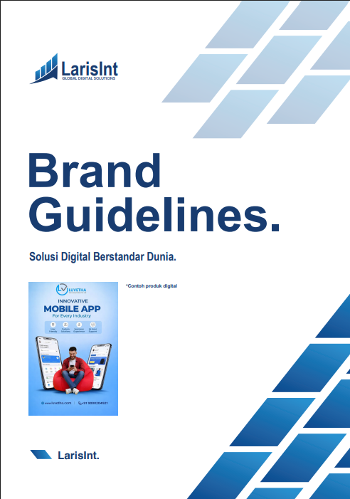
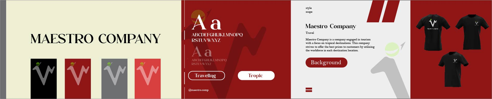
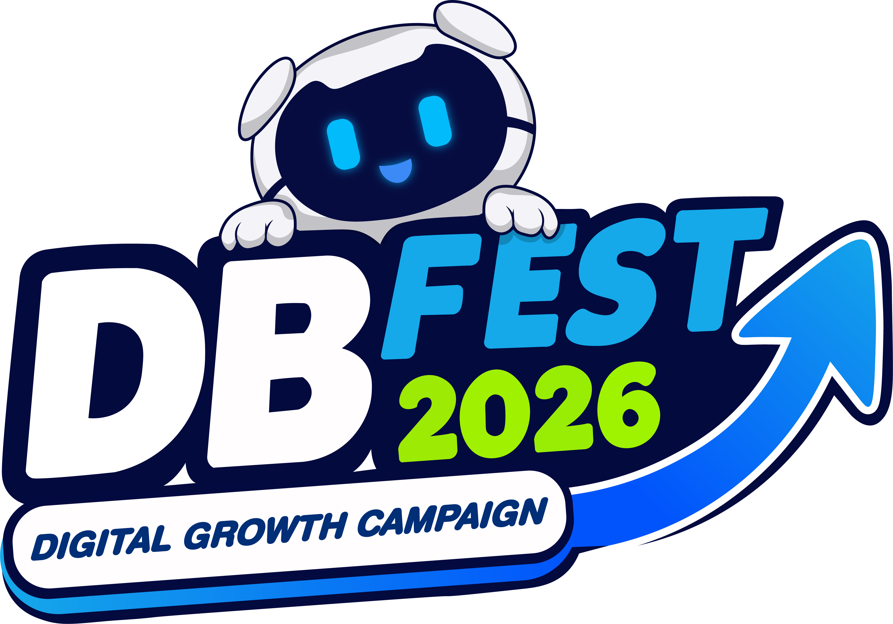
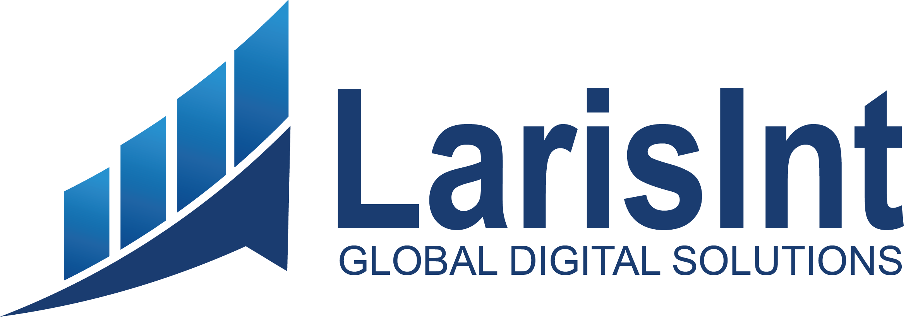
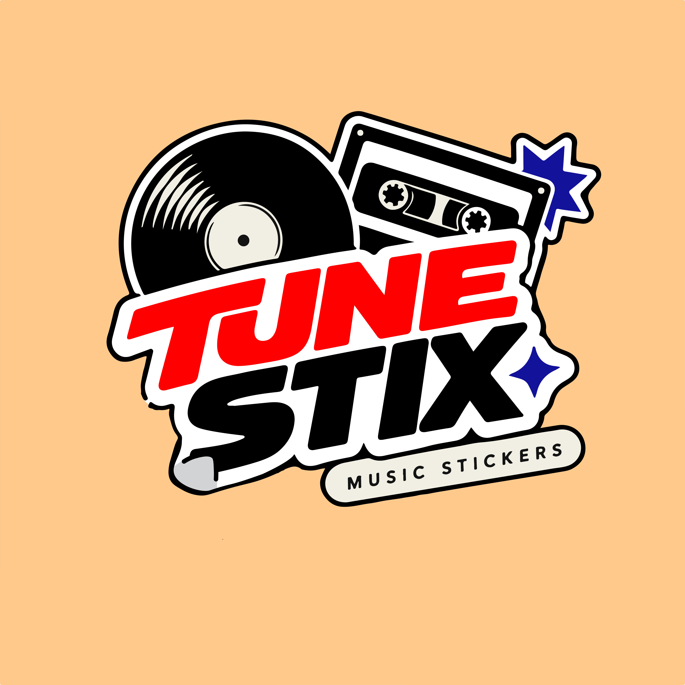

Brand Guideline
Brand Identity & Guidelines
Dokumentasi panduan brand lengkap yang menyusun identitas visual secara sistematis — mulai dari logo usage, color palette, tipografi, hingga penerapan di berbagai media agar brand tetap konsisten di setiap touchpoint.

Proyek ini disusun sebagai Tugas Semester 3 — dokumentasi panduan brand lengkap meliputi logo usage, color palette, tipografi, tone of voice, dan penerapan visual di berbagai media. Panduan dirancang agar seluruh tim dapat menerapkan identitas brand secara konsisten di setiap touchpoint.
Konsep panduan menekankan kejelasan dan konsistensi. Setiap aturan — mulai dari area aman logo, skala tipografi, hingga penggunaan warna — disusun secara sistematis dan mudah dipahami, agar identitas brand tetap terjaga dalam berbagai penerapan media cetak maupun digital.
Dari riset hingga panduan final
Riset
Mempelajari brand, audiens, dan kompetitor untuk dasar arahan visual.
Logo
Merancang identitas logo beserta varian dan area aman penggunaannya.
Aturan
Menyusun color palette, tipografi, tone of voice, dan penerapan visual.
Final
Finalisasi dokumen guideline yang rapi, jelas, dan mudah digunakan.
Stylescape
Creative Direction & Moodboard
Eksplorasi arah visual melalui stylescape — perpaduan mood, warna, tipografi, dan tekstur yang disusun untuk menangkap kepribadian brand sebelum dieksekusi ke dalam desain final.

Proyek ini menyusun stylescape sebagai fondasi arah visual — mengumpulkan referensi mood, palet warna, tipografi, dan tekstur yang selaras dengan kepribadian brand. Hasilnya menjadi panduan visual yang memudahkan proses desain lanjutan agar tetap konsisten dan terarah.
Konsep stylescape menekankan atmosfer dan estetika yang ingin disampaikan. Setiap elemen — warna, tipografi, gambar, dan tekstur — dipilih secara kuratorial agar membentuk satu bahasa visual yang utuh dan mudah dikembangkan ke berbagai media.
Dari riset hingga stylescape final
Riset
Mempelajari kepribadian brand, audiens, dan arah emosi yang ingin disampaikan.
Kurasi
Mengumpulkan referensi mood, warna, tipografi, dan tekstur yang selaras.
Komposisi
Menyusun elemen ke dalam board yang membentuk satu bahasa visual.
Final
Finalisasi stylescape yang siap menjadi arahan desain selanjutnya.
Logo
Logo Design & Brand Marks
Perancangan logo yang mencakup eksplorasi bentuk, pemilihan warna dan tipografi, hingga penyusunan brand mark yang komunikatif dan mudah dikenali.



Proyek ini merancang logo yang mencerminkan kepribadian dan nilai brand. Eksplorasi bentuk, pemilihan warna, dan tipografi dikerjakan secara sistematis agar brand mark tampil unik, mudah dikenali, dan fleksibel digunakan di berbagai media.
Konsep logo bertumpu pada kesederhanaan bentuk dan makna yang jelas. Setiap elemen grafis dipilih agar membentuk brand mark yang komunikatif, tetap kuat dalam ukuran kecil maupun besar, dan konsisten dengan identitas visual brand secara keseluruhan.
Dari konsep hingga logo final
Riset
Memahami kepribadian brand, nilai, dan audiens sasaran.
Sketsa
Mengeksplorasi bentuk dan konsep mark melalui sketsa manual.
Digital
Menyusun logo secara vektor dengan warna dan tipografi terpilih.
Final
Finalisasi logo siap pakai di berbagai media dan ukuran.
Brand Guideline — Brand Identity & Guidelines.
arrow_backBack to Selected Works